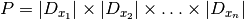
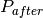
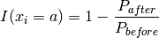
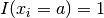
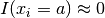
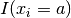

7.8. Default search
What do you do if you face a problem that doesn’t inspire you? Or that is too complicated to devise a customized search strategy? Use a default search! Several search strategies were devised to tackle any problem. To do so, they use generic methods that can be used without too much specific knowledge of the problem at hand. How can they do that? Simple. They use the model you provide and test some hypotheses to devise a dynamic search strategy. This concept is rather advanced but you can easily use our DefaultIntegerSearch DecisionBuilder. As its name implies, this DecisionBuilder only deals with IntVars.
7.8.1. Impact based search strategies
Several general-purpose strategies for Constraint Programming are based on the concept of impacts. While the basic ideas are quite simple, the implementation details are cumbersome and must be analyzed with great details.
7.8.1.1. The basic idea[1]
Roughly speaking, an impact measures the search space reduction of a basic variable assignment . When a variable is assigned, the constraints are propagated in a way or another and, hopefully, the domains of the other variables shrink and the overall search space diminishes.
In the section Second try: dynamic variable selection (and define our own DecisionBuilder class), we have encountered and implemented the first fail principle:
To succeed, try first where you are most likely to fail,
and the best success principle:
To find a solution, keep your options as large as possible.
Both principles are popular among CP experts. In practice one chooses first the variables that are the most constrained or that have the smallest domains (first fail principle) and then, once a variable has been chosen, choose a value that maximizes the number of possibilities for future assignments in the hope that if a solution exists which such assignment you will find it (best success principle).
In the section Second try: dynamic variable selection (and define our own DecisionBuilder class), we used these two principles: first we choose the queens that had the smallest domains starting from the center, and then we placed these queens in the best way to keep the most options open for the other queens choosing the row with the least compatible columns, again starting from the center.
Impact-based searches try to replicate exactly that: balancing these those principles. Most of the time, this is done dynamically, i.e. impacts (or rather estimates of impacts) are evaluated at each node of the search tree. It is also efficient to take some time before the search starts to evaluate good variable candidates or to restart the search with the knowledge obtained from the previous search(es). The idea here is to construct a search tree that is as small (efficient) as possible.
Other ingredients can also be added to the mix.
7.8.1.2. Definition of an impact
For a nice introduction to the concept of impacts, we refer the reader to [refalo2004]. We use the same notation as in this article.
Consider the number of all possible combinations of values for the variables as an estimation  of the size of the search tree:
of the size of the search tree:

If we look at this product before () and after () an assignment
 we have an estimation of the importance of this assignment for reducing
the search space:
we have an estimation of the importance of this assignment for reducing
the search space:

This reduction rate is called the impact of the assignment .
The higher the impact for an assignment, the smaller the size of the search tree. At one extreme, if the assignment violates the model, we have .
On the other hand, if the assignment didn’t reduce too much the domains of the other variables, .
Now we need a measure of the impact of a variable (not just the impact of the assignment of this variable for one value). Not only must this measure be able to compare different variables at a node of the search tree, but it also must be able to be computed easily. Several possibilities are available and do indeed exist. They are based on  for several values . We refer the interested reader to the existing literature and the code for the different implementations that we use in the or-tools library.
7.8.2. DefaultPhaseParameters
The DefaultPhaseParameters struct allows to customize a DefaultIntegerSearch DecisionBuilder. It holds the following variables:
| Variable | Default value |
|---|---|
| var_selection_schema | CHOOSE_MAX_SUM_IMPACT |
| value_selection_schema | SELECT_MIN_IMPACT |
| initialization_splits | kDefaultNumberOfSplits |
| run_all_heuristics | true |
| heuristic_period | kDefaultHeuristicPeriod |
| heuristic_num_failures_limit | kDefaultHeuristicNumFailuresLimit |
| persistent_impact | true |
| random_seed | kDefaultSeed |
| restart_log_size | kDefaultRestartLogSize |
| display_level | NORMAL |
| use_no_goods | kDefaultUseNoGoods |
| decision_builder | nullptr |
| lns | kDefaultLnsControl |
We discuss briefly some of these variables and refer the reader to the code for a deeper comprehension of our implementation of the DefaultIntegerSearch DecisionBuilder.
var_selection_schema: This parameter describes how the next variable to instantiate will be chosen. Its type is the following enum:
enum VariableSelection { CHOOSE_MAX_SUM_IMPACT = 0, CHOOSE_MAX_AVERAGE_IMPACT = 1, CHOOSE_MAX_VALUE_IMPACT = 2, };
As you can see, we try to maximize the impact for the selected variable, following the first fail principle.
value_selection_schema: This parameter describes which value to select for a given variable. Its type is the following enum:
enum ValueSelection { SELECT_MIN_IMPACT = 0, SELECT_MAX_IMPACT = 1, };
This time, we propose both the minimization or maximization of the impact. By default, we try to minimize it, following the best success principle.
run_all_heuristics (bool): The default phase will run heuristics periodically. This Boolean parameter indicates if we should run all heuristics, or a randomly selected one. Check the file default_search.cc to see the different heuristics chosen to assign variables and values. Most of them are a combination between specific search strategies and randomness.
heuristic_period (int): The distance in nodes between each run of the heuristics. A negative or null value means that no heuristic is run.
heuristic_num_failures_limit (int): The failure limit for each heuristic that we run.
persistent_impact (bool): Whether to keep the impact from the first search for other searches or to recompute the impact for each new search.
random_seed (int): Seed used to initialize the random part in some heuristics.
decision_builder (DecisionBuilder*): When defined, this overrides the default impact based DecisionBuilder.
7.8.3. First results
We use the Golomb Ruler Problem from the chapter Using objectives in constraint programming: the Golomb Ruler Problem to illustrate the use of the default search phase. No need to remember the Golomb Ruler Problem, we just want to compare our default strategy (CHOOSE_FIRST_UNBOUND then ASSIGN_MIN_VALUE) with the default phase search. We take exactly the same model in both cases (see golomb7.cc).
There are two factory methods you can use to define a DefaultIntegerSearch DecisionBuilder:
DecisionBuilder* Solver::MakeDefaultPhase(
const std::vector<IntVar*>& vars) {
DefaultPhaseParameters parameters;
return MakeDefaultPhase(vars, parameters);
}
DecisionBuilder* Solver::MakeDefaultPhase(
const std::vector<IntVar*>& vars,
const DefaultPhaseParameters& parameters) {
return RevAlloc(new DefaultIntegerSearch(this, vars, parameters));
}
The first one uses the DefaultPhaseParameters struct with its default values, the second one accepts a customized DefaultPhaseParameters struct.
Let’s try the default DefaultPhaseParameters (file golomb_default_search1.cc) and the Default Search to solve the Golomb Ruler Problem with n=9. Let’s compare our new result with the results of the chapter Using objectives in constraint programming: the Golomb Ruler Problem in the next Table[2]:
| Impl1 | Impl2 | Impl2+ | Impl3 | Impl3+ | Default Search |
|---|---|---|---|---|---|
| 1,513 | 0,79 | 0,812 | 0,163 | 0,059 | 1,378 |
Times are given in seconds.
We need to tweak a little bit our DefaultPhaseParameters struct if we want to have a chance of beating the implementations Impl2 to Impl3+ (file golomb_default_search2.cc):
DefaultPhaseParameters parameters;
parameters.var_selection_schema =
DefaultPhaseParameters::CHOOSE_MAX_VALUE_IMPACT;
parameters.value_selection_schema =
DefaultPhaseParameters::SELECT_MAX_IMPACT;
parameters.heuristic_period = -1;
parameters.restart_log_size = -5;
parameters.use_no_goods = false;
With these parameters[3] we get:
| Default Search | Default Search with customized parameters |
|---|---|
| 1,378 | 0,066 |
Not bad for an algorithm that doesn’t know anything about the problem[4]! As  grows, we can see the difference between algorithm Impl3+ (golomb7.cc) and our customized Default Search (golomb_default_search2.cc):
grows, we can see the difference between algorithm Impl3+ (golomb7.cc) and our customized Default Search (golomb_default_search2.cc):
|
Impl3+ | Default Search with customized parameters |
|---|---|---|
| 9 | 0.059 | 0,066 |
| 10 | 0,379 | 0,32 |
| 11 | 14,543 | 19,935 |
| 12 | 65,674 | 76,156 |
Footnotes
| [1] | A side note for MIP practitioners: there are strong similarities between impacts and pseudo-costs. Indeed impacts were devised with pseudo costs and general branching schemes from MIP in mind. See [refalo2004] for more. |
| [2] | If you compare the results with the ones written in the section A third model and its implementation, you’ll see that not only did we change of computer but that the library has evolved since we wrote the chapter Using objectives in constraint programming: the Golomb Ruler Problem. |
| [3] | These parameters were obtained after some trials. |
| [4] | Once again, until now, no-one could ever come with a clever algorithm using only Constraint Programming. |
Bibliography
| [refalo2004] | (1, 2) P. Refalo, Impact-Based Search Strategies for Constraint Programming in Principles and Practice of Constraint Programming – CP 2004, Lecture Notes in Computer Science, Springer 2004, pp 557-571. |
Google or-tools |
User's Manual
Google search
Welcome
Tutorial examples
Current chapter
7. Meta-heuristics: several previous problems
Previous section
7.7. Large neighborhood search (LNS): the Job-Shop Problem